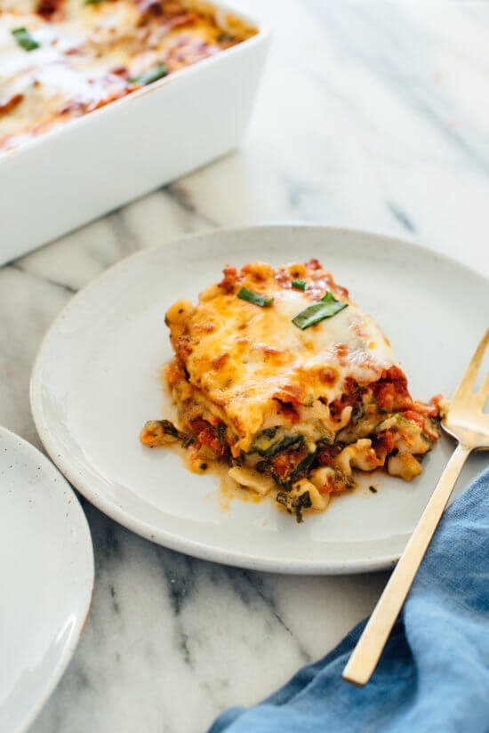

Vegetable Lasagne

"So Good You Won't Want a Beef One" Veggie Lasange
A fantastic vegetable lasagne recipe to use up whatever veggies you have on hand!
Easily done with store-bought marinara sauce as well.
Ingredients
Veggies and spinach
- 2 tbsp olive oil
- 3 large carrots
- 1 red bell pepper
- 1 medium courgette
- 1 medium yellow onion
- some salt
- 5 to 6 ounces of baby spinach
Tomato sauce (or substitute two cups prepared marinara)
- 28 ounce can of diced tomatoes
- 1/4 cup fresh basil + more for garnish
- 2 tbsp olive oil
- 2 cloves of garlic, pressed or minced
- some salt
- some red pepper flakes
Remaining ingredients
- 2 cups cottage cheese (low fat ok!)
- some salt
- some freshly grund black pepper
- lasagna noodles (no boil ok!)
- 8 ounces shredded mozzarella
Instructions
- Preheat the oven to 220 degrees celsius (200 degrees with the fan)
- To prepare the veggies: Over medium heat, warm the olive oil. Once shimmering, add all veggies (sans spinach) and add a pinch of salt. Cook for 8-12 minutes until veggies are golden on the edges
- Add spinach a handful at a time, stirring frequently, until all the spinach is wilted. Remove from heat and set aside
- If using store bought sauce, skip ahead to step 6. Pour tomatoes into a sive and drain off excess juice. Add to food processor, along with basil, olive oil, garlic, salt, and red pepper flakes.
- Pulse the mixture about 10 times until the mix is easily spreadable. Pour into a bowl for later, then rinse out food processor.
- Pour half the cottage cheese into the processor and blend until smooth. Transfer to large mixing bowl.
- Transfer cooked veggies to processor and pulse until finely chopped (not pureed!). Add to bowl of whipped cheese, top with remaining cheese, then salt to taste. Add black pepper too! Combine well.
- Assemble in this order: 1/2 cup of sauce, noodles, half of the cottage cheese mixture, 3/4 cup of sauce, 1/2 cup shredded cheese.
- Continue assembly: more noodles, remaining cottage cheese mix, 1/2 cup shredded cheese, more noodles, remaining sauce, 1 cup shredded cheese
- Cover lasagna with foil (don't let it touch the cheese). Bake for 18 minutes then remove the cover, turn the pan 180 degrees, then bake for 10-12 minutes more.
- Remove when cheese gets spotty, and let cool for 15-20 minutes before serving.